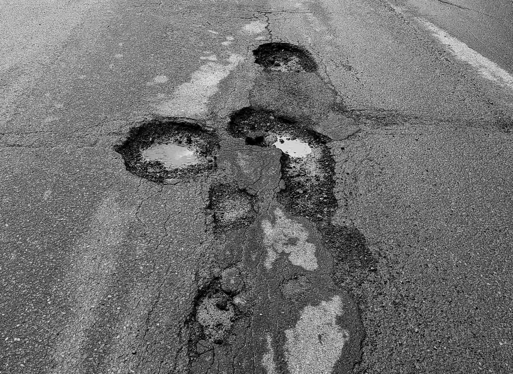

A Lifetime of Client Care
Each pothole formation in our collection is supported by ongoing documentation and seasonal monitoring.


Whether you are inquiring about a specific pothole, requesting structural certification details, or seeking guidance on selecting a formation suited to your daily commute, Mayor Soraya Martinez Ferrada is prepared to assist.

Call 514-872-0311
This satirical website reframes Montreal’s deteriorating roadways through the visual and rhetorical language of luxury jewellery. Rather than proposing a technical solution to infrastructural decay, the project interrogates its normalization by transforming potholes into objects of desire. Drawing on the branding conventions of high-end jewellery retailers, the website presents potholes as rare, certified diamonds. Gemological criteria such as carat, cut, and colour are translated into diameter, shape, and prevalence. The project’s visual identity reinforces this tension. A deep monochromatic red evokes both luxury and blood, suggesting heritage while alluding to the extractive violence historically associated with the diamond trade and the real dangers of neglecting public infrastructure. It also references Montreal’s civic brand colour, a vivid red that anchors the project in a familiar visual identity. If you want to help, you can report a pothole.
“Clarity is the Key to Quality.” GIA, 16 Oct. 2025, 4cs.gia.edu/en-us/diamond-clarity.
“Ensuring Conflict-Free Diamonds Worldwide.” Kimberley Process, kimberleyprocess.com.
Luft, Amy. “Montreal Launches Emergency Plan to Tackle Surge in Potholes.” CTVNews, 6 Feb. 2026, ctvnews.ca/montreal/article/montreal-launches-emergency-plan-to-tackle-surge-in-potholes.
“Report a Pothole.” Ville De Montréal, montreal.ca/en/how-to/report-pothole.
Rouhana, Rachel. “Luxury Color Palettes for Wellness Brands.” Haute Stock Blog, 24 Jan. 2025, hautestock.co/luxury-color-palettes-for-wellness-brands.
Tiffany. “HardWear by Tiffany.” Tiffany & Co, tiffany.ca.
The Canadian Press. “Road to Ruin: Montreal’s Pothole Problems Have Solutions — but City Lacks Money.” CTVNews, 17 Feb. 2026, ctvnews.ca/montreal/article/road-to-ruin-montreals-pothole-problems-have-solutions-but-city-lacks-money.